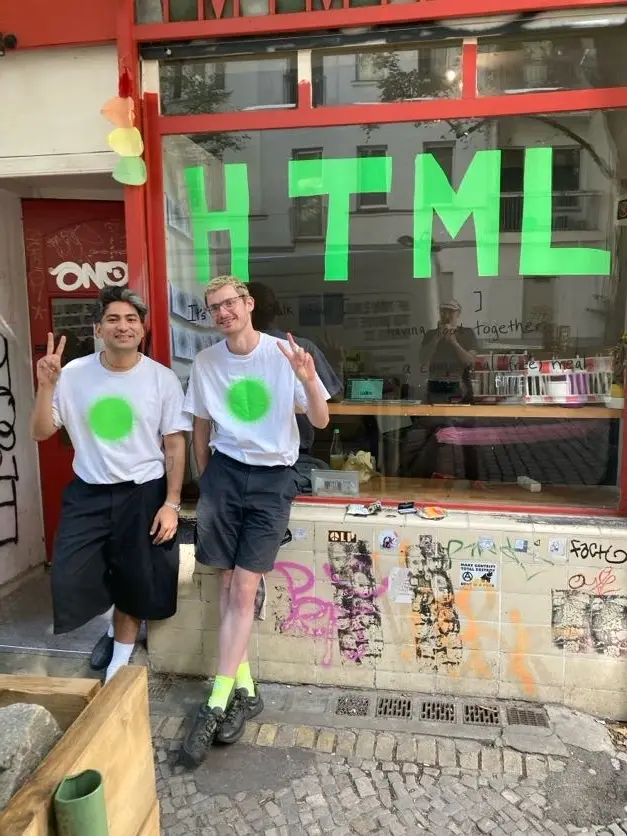
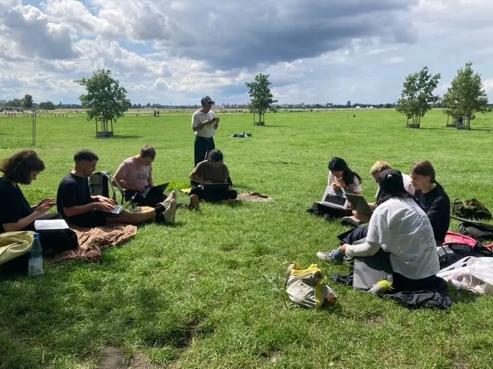
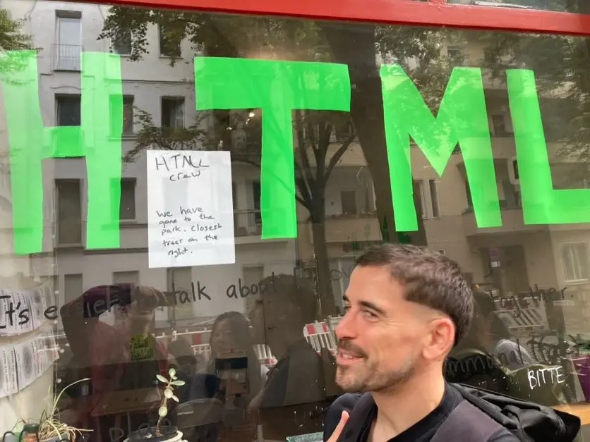
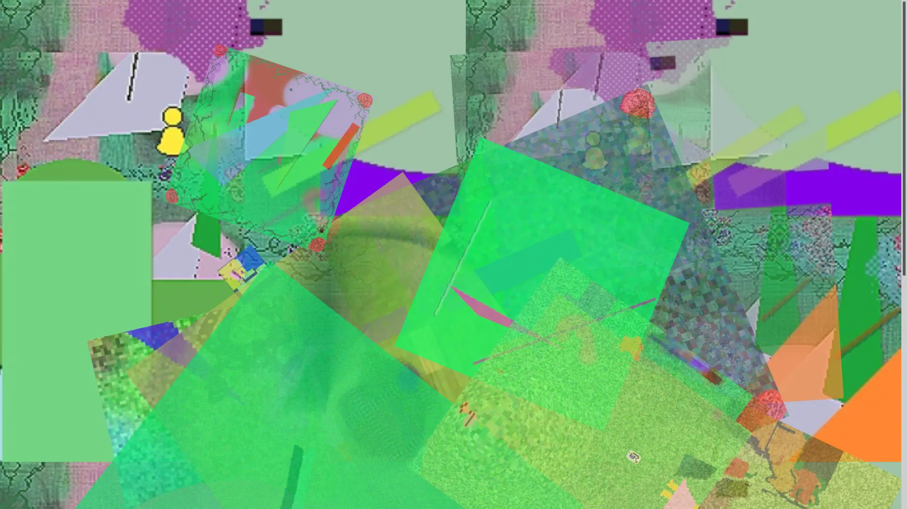
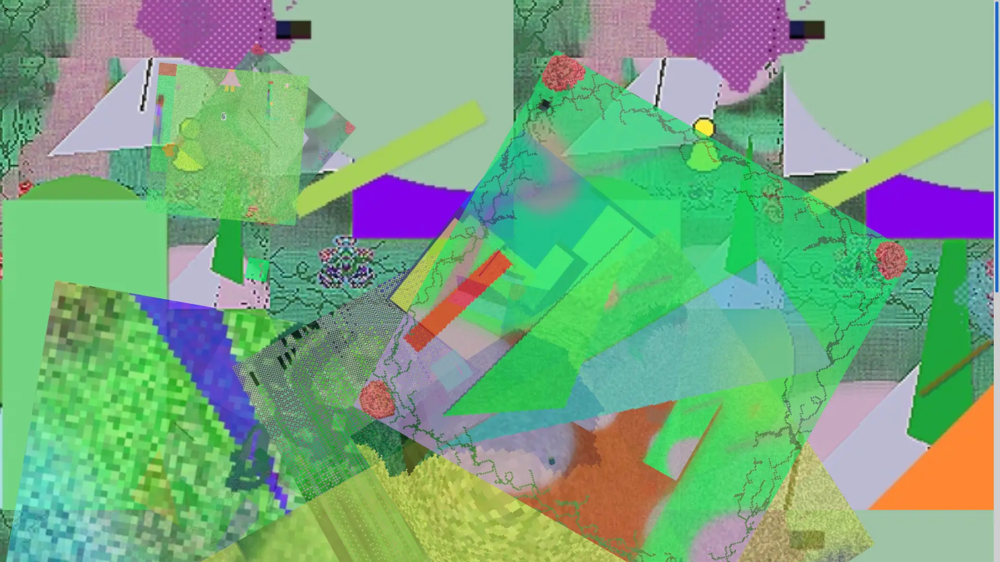
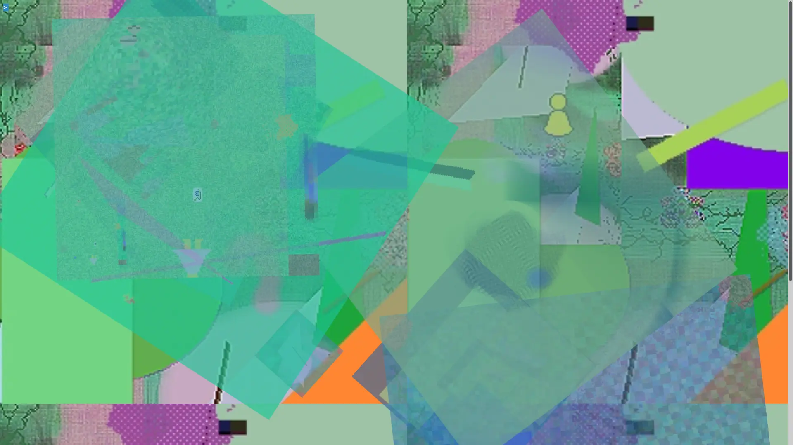
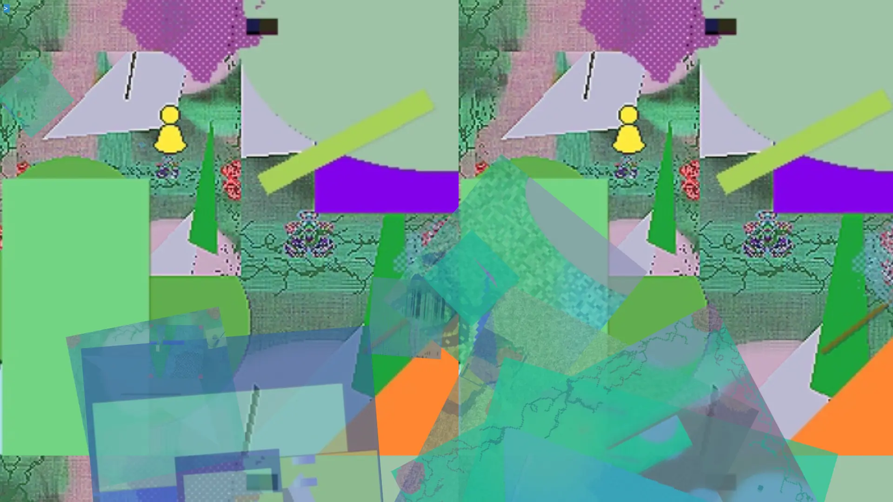

In August 2025 I participated in HTML Energy Day in Berlin, at Offline place (and in Tempelhofer Field when it wasn't raining). HTML Day is an annual celebration of HTML. It's a day to gather IRL in places around the world to write and learn HTML. It's been going strong for three years. I really loved seeing the distributed semi-worldwide HTML day unroll, in person and online. Seeing friends organizing in SF, NYC, Boston, Philly, Berlin, Amsterdam, Rotterdam, Seoul (I'm leaving out many others) and posting their photos, and meeting everyone was a great experience.
In the iteration in Berlin maybe 10-ish of us met up, some people totally new learning HTML and making a basic blocky 90s style site, others wielding JS and making complex artworks with CSS. It was a great example illustrating some of the ideas of the Permacomputing Aesthetics: Potential and Limits of Constraints in Computational Art, Design and Culture that has been a source of inspiration to me.
Some people coded on computers, some on paper, in notebooks. I coded on a very old ipad (shout out to Koder which works super well, works with sftp and local files, and has a local server/browser. (app is 33MB, free)
There is a photo archive of event photos. I created a basic HTML page outline, drew in noPaint, and used HTML, CSS and JS in a couple lines. Because Offline and then the field we moved to have no internet or phone connection, people were checking with each other asking about various html elements and ideas. This is the site as originally drawn. While fairly basic code, it produces *unfolding variations* as many of my works do, and there were at least a few skeptical people in attendance that thought what I had made was super complex despite my insistence on the simplicity of the programming. I don't think you need to see the code to appreciate the work. It's an abstract piece, an attempt at reflecting the diversity of greenspace, nature, edge areas of Berlin.
This was created initially as drawings in noPaint on iPad mini. I also coded the site in HTML, CSS and JS on the ipad entirely on the mini screen (thanks Koder app!).







©opyleft